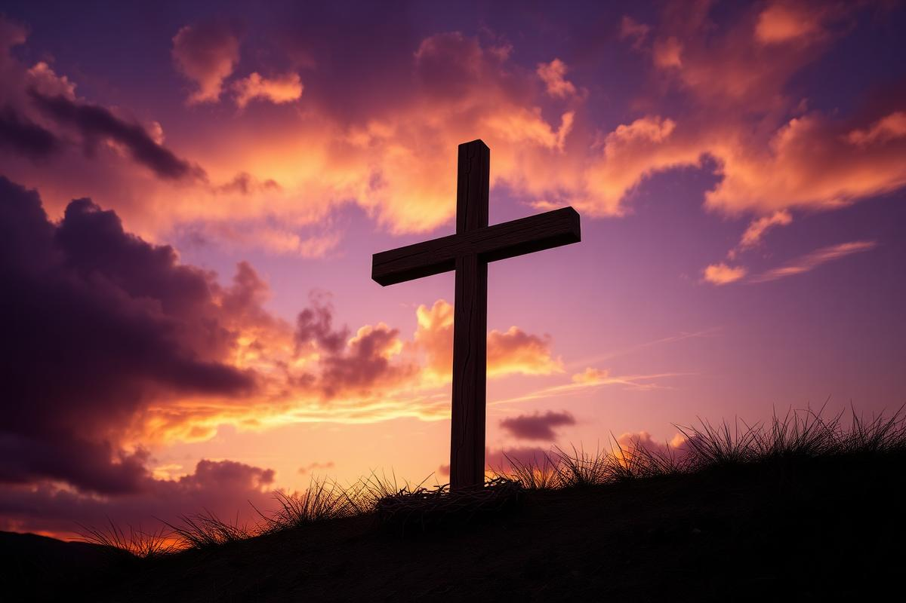
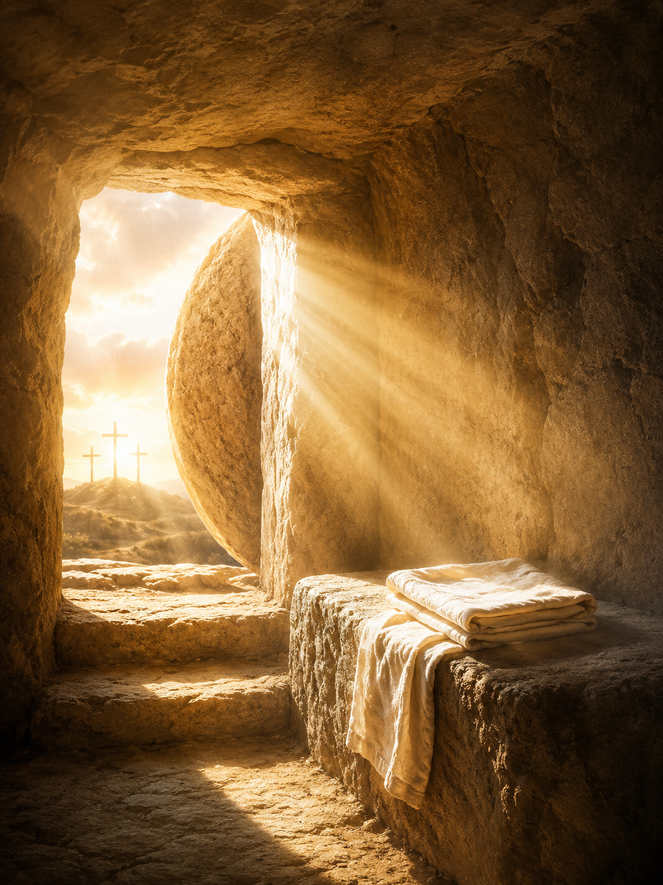

O centro de toda a esperança cristã.
Na cruz, no túmulo vazio e no trono celestial, encontramos a maior demonstração do amor de Deus pela humanidade.
A vida, morte e ressurreição de Jesus Cristo formam o núcleo da fé cristã e da mensagem que a Igreja Adventista do Sétimo Dia leva ao mundo. Sem esses três pilares, não há evangelho, não há perdão e não há esperança da segunda vinda.
Jesus deixou o céu, viveu como ser humano sem cometer pecado, morreu em nosso lugar e ressuscitou no terceiro dia. Cada um desses passos cumpre profecias antigas e revela, em detalhes, o plano da salvação concebido antes da fundação do mundo.
Esta especialidade convida o desbravador a olhar para o Cordeiro de Deus — não apenas como uma figura histórica, mas como o Salvador pessoal e o Sumo Sacerdote que ainda hoje intercede no Santuário Celestial.
Os três pilares
- A Vida Perfeita — Jesus viveu sem pecado, sendo nosso exemplo e substituto.
- A Morte Substitutiva — Na cruz, pagou o preço pelos pecados de toda a humanidade.
- A Ressurreição Vitoriosa — Venceu a morte, garantindo a nossa salvação e a vida eterna.
A vida perfeita que Cristo viveu.
"Ele não cometeu pecado, e nenhum engano foi achado em sua boca." — 1 Pedro 2:22
Sem pecado, sem engano, sem retaliação
O apóstolo Pedro descreve a vida de Jesus em palavras que ecoam a profecia de Isaías 53. Cristo viveu uma existência moralmente perfeita: não cometeu pecado algum, não houve falsidade em suas palavras e, mesmo sendo injuriado, não respondeu com injúrias.
Quando sofria, não ameaçava — entregava-se Àquele que julga com justiça. Essa atitude revela o caráter do Reino: humildade, mansidão e total confiança no Pai.
O único ser humano que nunca pecou
Em toda a história da humanidade — desde Adão até hoje — apenas uma única pessoa viveu sem jamais cometer um pecado: Jesus Cristo.
Jesus foi tentado em tudo — fome, cansaço, solidão, sofrimento, traição, dor física — e em todas as situações venceu. Isso O qualifica como nosso Sumo Sacerdote: Ele compreende nossas lutas e, ao mesmo tempo, oferece a perfeição que precisamos.
Por que isso é tão importante?
Os sacrifícios do Antigo Testamento exigiam um cordeiro sem mancha e sem defeito (Êxodo 12:5). Era uma sombra apontando para o futuro: somente um Salvador absolutamente puro poderia tirar o pecado do mundo.
Quando João Batista viu Jesus, exclamou: "Eis o Cordeiro de Deus, que tira o pecado do mundo!" (João 1:29). A vida sem pecado de Cristo não foi apenas um exemplo moral — foi o requisito legal para que Ele pudesse ser o nosso substituto.
Ellen G. White escreve em O Desejado de Todas as Nações: "Cristo tomou a natureza humana com todas as suas responsabilidades. Tomou a natureza do homem, com a possibilidade de ceder à tentação." Ainda assim, jamais cedeu.
"Pelas suas pisaduras fomos sarados."
A cruz não foi uma tragédia inesperada — foi o cumprimento exato do plano da salvação.

Mesmo sem pecado, Ele morreu por nós
Esta é uma das perguntas mais profundas da fé cristã. Se Jesus era inocente, por que precisou enfrentar a cruz?
A resposta está no princípio bíblico de que "o salário do pecado é a morte" (Romanos 6:23). Toda a humanidade pecou — e a justiça de Deus exigia que esse preço fosse pago. Mas o amor de Deus enviou Alguém para pagá-lo em nosso lugar.
Reconciliação
Cristo nos reconciliou com Deus, restaurando a comunhão quebrada pelo pecado (Romanos 5:10).
Redenção
Com Seu sangue, comprou pessoas de toda tribo, língua, povo e nação (Apocalipse 5:9).
Perdão
Pela cruz, recebemos perdão dos pecados e a promessa da vida eterna (Efésios 1:7).
Vitória sobre Satanás
Despojou principados e potestades, triunfando sobre eles na cruz (Colossenses 2:15).
Justificação
Somos declarados justos diante de Deus pela fé em Cristo (Romanos 5:9).
Acesso ao Pai
O véu do templo se rasgou — agora temos acesso direto a Deus por meio de Jesus (Hebreus 10:19-20).
O túmulo vazio que mudou a história.
Sem a ressurreição, a cruz seria apenas mais uma execução. Com ela, é a vitória definitiva sobre o pecado e a morte.

Cristo, as primícias dos que dormem
Paulo declara que Cristo realmente ressuscitou dos mortos e tornou-Se as primícias — o primeiro fruto de uma grande colheita. Sua ressurreição é a garantia de que todos os que pertencem a Cristo também ressuscitarão na Sua vinda.
Sem a ressurreição, nossa fé seria vã (1 Coríntios 15:14). Com ela, temos a certeza de que a morte foi derrotada e que existe vida além do túmulo.
Por que a ressurreição é essencial?
- Prova que Deus aceitou o sacrifício. Se Cristo continuasse no túmulo, significaria que o pagamento foi insuficiente.
- Vence a morte. Jesus "aboliu a morte e trouxe à luz a vida e a incorrupção" (2 Timóteo 1:10).
- Garante nossa ressurreição. Porque Ele vive, nós também viveremos (João 14:19).
- Inaugura o ministério celestial. Jesus subiu como Sumo Sacerdote para interceder por nós no Santuário Celestial.
- Confirma a esperança bendita. Voltará em glória para buscar Seu povo (Atos 1:11).
A ressurreição e a Segunda Vinda
Para os adventistas do sétimo dia, a ressurreição de Cristo está intimamente ligada à esperança da Segunda Vinda. Na volta de Jesus, "os mortos em Cristo ressuscitarão primeiro" (1 Tessalonicenses 4:16).
Essa é a "bendita esperança" (Tito 2:13): um dia, a morte será para sempre destruída, e os redimidos viverão eternamente com Cristo em uma nova Terra, sem dor, sem lágrimas e sem pecado.
Das 28 Crenças Fundamentais da Igreja Adventista do Sétimo Dia, várias falam diretamente sobre a vida, morte, ressurreição, ministério sacerdotal e Segunda Vinda de Cristo.
Por que Ele veio, morreu e ressuscitou?
A Bíblia responde com clareza — e essa é a mensagem que devemos compartilhar com cada amigo.
Quatro verdades para contar a alguém hoje
- Jesus veio buscar quem está perdido — ninguém está fora do alcance do Seu amor.
- Deus amou o mundo a tal ponto que entregou Seu próprio Filho.
- Jesus vive para interceder — Ele não apenas morreu, mas continua trabalhando pela sua salvação.
- Só em Jesus há salvação — não existe outro caminho, outro nome, outra esperança.
Curiosidades & aprofundamentos.
Detalhes que enriquecem a compreensão da maior história já contada.
33 anos
Jesus viveu cerca de 33 anos na Terra. Aproximadamente três anos e meio dedicados ao ministério público, cumprindo profecias como Daniel 9:27.
Sexta-feira da Paixão
Cristo morreu na sexta-feira, descansou no sábado (cumprindo o quarto mandamento até no túmulo) e ressuscitou no primeiro dia da semana.
Mais de 500 testemunhas
Após ressuscitar, Jesus apareceu a Maria Madalena, aos discípulos, e "a mais de quinhentos irmãos de uma só vez" (1 Coríntios 15:6).
Profecias cumpridas
Existem mais de 300 profecias messiânicas no Antigo Testamento — e Jesus cumpriu todas elas em Sua primeira vinda.
O Santuário Celestial
Após ressuscitar, Cristo ascendeu ao céu para ministrar como nosso Sumo Sacerdote no Santuário Celestial — doutrina central para os adventistas.
A Páscoa cumprida
Jesus morreu exatamente na época da Páscoa judaica. Ele é o verdadeiro Cordeiro Pascal, cujo sangue nos liberta da escravidão do pecado.
O que este estudo nos ensina.
Todos os pontos do programa abordados nesta jornada.
- Como 1 Pedro 2:22-23 descreve a vida perfeita de Cristo: sem pecado, sem engano, sem retaliação, confiando totalmente no Pai.
- O reconhecimento de que Jesus foi o único ser humano que nunca pecou (Hebreus 4:15), sendo tentado em tudo, porém sem pecado.
- O que Cristo conquistou por meio de Sua morte: reconciliação (Romanos 5:10) e redenção de toda tribo, língua e nação (Apocalipse 5:9).
- A razão pela qual Jesus, mesmo sem pecado, precisou morrer: para salvar pecadores (1 Timóteo 1:15) como prova do amor de Deus por nós (Romanos 5:8).
- A importância da ressurreição: Cristo é as primícias dos que dormem, garantindo nossa própria ressurreição na Sua vinda (1 Coríntios 15:20-23).
- A memorização de Isaías 53:4-5 — a profecia que descreve com precisão o sofrimento substitutivo do Messias.
- O propósito da vinda, morte e ressurreição de Jesus, para compartilhar com um amigo: buscar e salvar o perdido (Lucas 19:10), por amor (João 3:16-17), para interceder eternamente (Hebreus 7:25), porque só nEle há salvação (Atos 4:12).